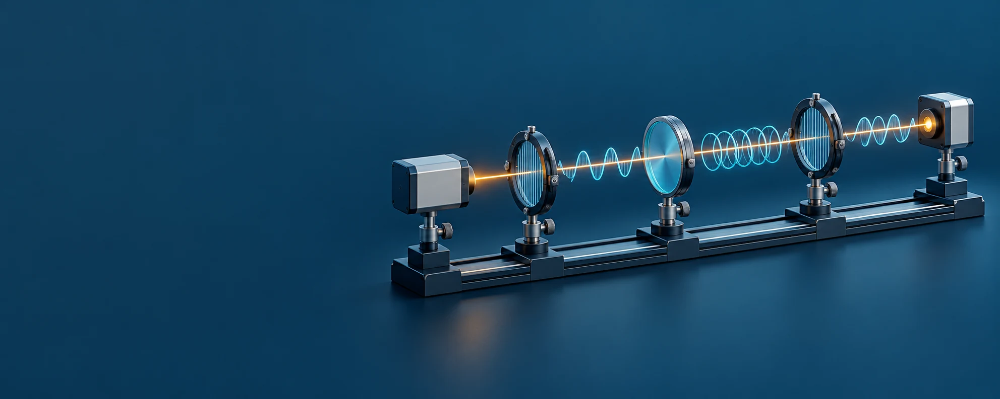
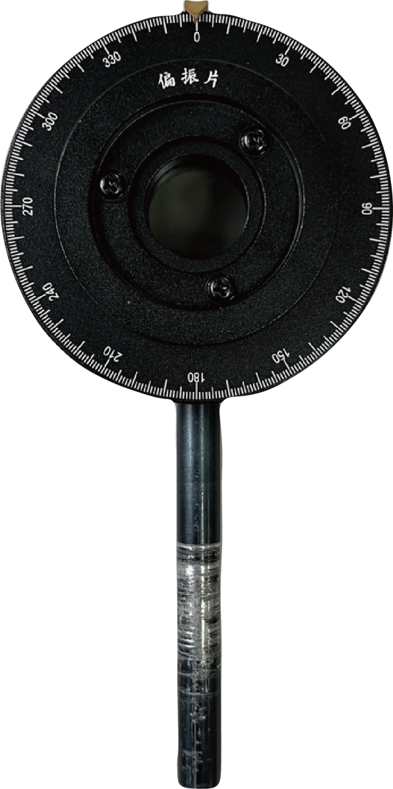
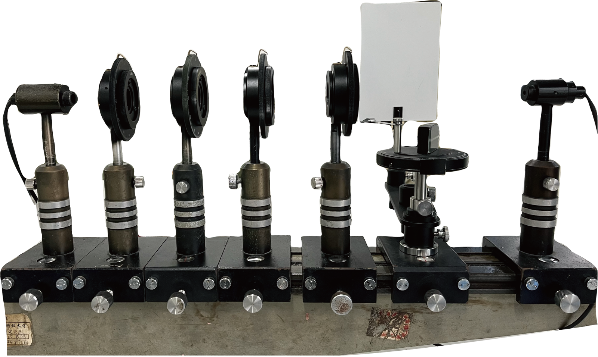

光的偏振
从光的振动方向，到仪器上的真实读数。
在观察、操作与测量中，理解偏振光的变化。
循着光路，走进实验
课前预习 · 仿真练习 · 实验复习
五个实验，一条理解路径
带着问题开始预习
为什么两片偏振片可以让光从明亮变为消光？波片改变了什么？怎样利用反射光判断布儒斯特角？让每一次操作都有观察目标。
我的预习进度
学习记录保存在当前浏览器。实验数据与图表可自行导出，便于课后整理。
起偏与马吕斯定律
转动检偏器，观察光的偏振方向与光电流如何变化。
随元件操作实时更新 · 含背景电流
光路检查与精细调节
直接拖底座移动，拖刻度环转动；把器件拖到导轨旁即可取下，再拖回轨道自动放入。元件留在旁边，角度保持。光只经过已放回导轨且位于光源与探测器之间的元件。
拖底座移动 · 拖刻度环转动 · 拖出导轨取下 · 拖回轨道放入 · 空白处旋转视角
电场矢量轨迹
线偏振光光电流与检偏角
理论模拟我的模拟记录 0
练习采样与记录，记录可发送到数据处理区。
| 项目 | 扫描角 / ° | 光电流 / μA | 光学配置 | 数据来源 |
|---|
认识实验仪器
真实照片对照三维结构，先认部件，再练习操作。

原始课件配套实物照片
三维结构与调角练习
参照照片建立的结构示意模型，可旋转观察。模型尺寸为教学比例，非设备制造图。
整套装置实物对照

按实验目标选择元件配置；波片实验与布儒斯特反射实验分别搭建。
偏振原理探索
把数学关系、偏振轨迹与实验中的读数联系起来。
五类偏振光的实验鉴别
| 入射光 | 仅转动检偏器 | 再加 \(\lambda/4\) 波片并调整轴向 |
|---|---|---|
| 线偏振光 | 可完全消光 | 第一步即可鉴别 |
| 自然光 | 恒定 | 仍恒定 |
| 圆偏振光 | 恒定 | 变为线偏振，可消光 |
| 完全椭圆偏振光 | 变化但不消光 | 轴向对准主轴后可消光 |
| 部分偏振光 | 可能变化，也可能恒定 | 遍历波片与检偏器后仍有非偏振底光 |
上述判据采用单色光与理想波片。实际实验先考虑背景光、暗电流及器件消光比。
实验数据处理
输入实际实验记录，完成背景扣除、拟合、折射率计算与结果导出。
预习自测
先独立作答，再对照解释检查自己的实验判断。
资料来源与使用说明
教学内容有据可查，模拟条件与实际测量明确区分。
模型与数据约定
本平台以相干矩阵描述完全和部分偏振光；偏振片投影与波片的相对相位延迟统一计算。波片设为与单色光匹配的理想器件。三维动画的光学频率已放慢。
模拟光电流 = 背景电流 + 标定系数 × 接收光强 × 共轴耦合。标定系数和背景可修改，初始参数是教学示例，不是现场设备的技术指标。布儒斯特实验探测臂的角响应为示意接收函数。
仪器三维模型参照实物照片建立，展示可操作部件和光路位置关系，未进行尺寸实测或内部结构复原。
记录、题目答案和数据处理结果仅保存在当前浏览器本机，不上传至服务器。导出 CSV 可留存结果，浏览器清理站点数据后本地记录会丢失。
课程原件和参考材料不提供在线下载。原理参考：OpenStax · Polarization（文字书目）。三维渲染：Three.js（MIT），依赖已随平台保存，可在本地服务器离线使用。